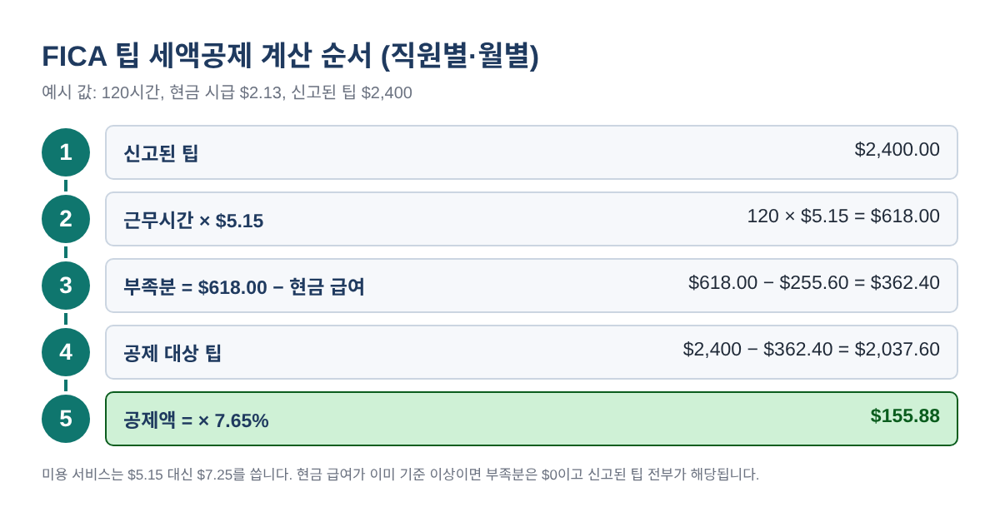
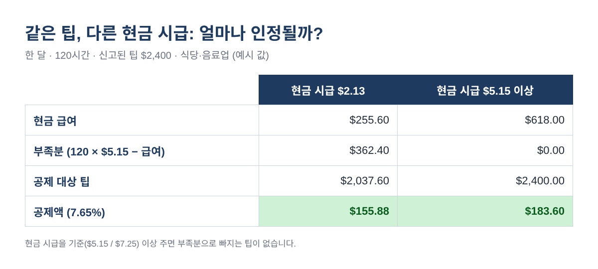
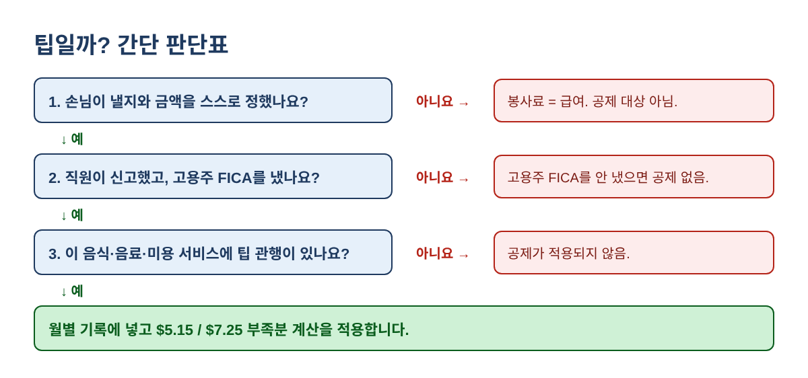
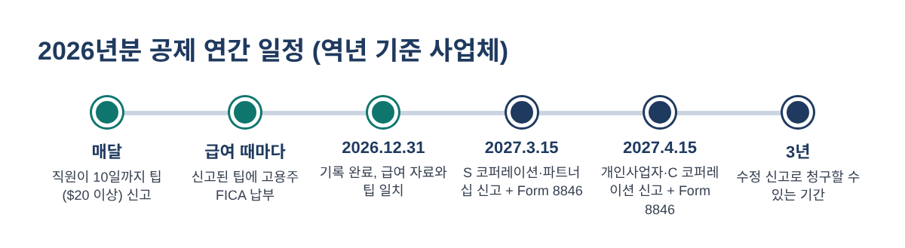

직원 팁에 낸 FICA, 돌려받을 수 있습니다: 식당·네일샵·미용실 FICA 팁 세액공제(Form 8846) 계산법 2026
직원이 팁을 받는 가게라면 사장님은 이미 모르는 사이에 세금을 하나 더 내고 계십니다. 직원이 신고한 팁 1달러마다 고용주 몫 사회보장세와 메디케어, 합쳐서 7.65%를 내는 것입니다. 손님이 많은 식당이나 네일샵, 미용실이라면 1년에 수천 달러가 됩니다.
반가운 소식은 이 돈의 상당 부분을 FICA 팁 세액공제(IRS Form 8846)로 돌려받을 수 있다는 점입니다. 예전에는 식당만 해당됐지만, 2024년 12월 31일 이후 시작하는 과세연도부터는 이발·헤어, 네일, 피부관리(에스테틱), 바디·스파 서비스의 팁도 포함됩니다. 한인 사장님이 많이 운영하시는 네일샵과 미용실에 특히 중요한 변화입니다. 아래 순서대로 따라 하시면 엑셀 하나로 연말 전에 공제액을 직접 계산해 보실 수 있습니다.
누가 받을 수 있나요
다음 두 가지가 모두 맞으면 해당됩니다.
- 직원이 음식·음료를 제공·배달·서빙하거나 이발·헤어, 네일, 피부관리, 바디·스파 서비스를 하고 손님에게 팁을 받았고, 그 서비스에 팁을 주는 관행이 있다.
- 그 팁에 대해 사장님이 고용주 몫 사회보장세·메디케어를 냈다(또는 낼 의무가 생겼다).
두 번째 조건이 핵심입니다. 공제는 실제로 낸 세금을 기준으로 합니다. 직원이 신고하지 않은 현금 팁, 부스 렌트를 하는 분이나 1099 계약자가 받은 팁에는 고용주 FICA가 없으므로 공제도 없습니다.
규칙을 한 문장으로
직원별·월별로, 신고된 팁에서 "현금 급여를 연방 기준 시급까지 채우는 데 필요한 부분"을 뺀 금액의 7.65%가 공제액입니다. 기준 시급은 식당·음료업은 시간당 $5.15(법에서 2007년 1월 1일 기준 최저임금으로 고정), 미용 서비스는 시간당 $7.25(현재 연방 최저임금)입니다.

단계별 계산: 직원 1명의 한 달
- 숫자 세 개를 준비합니다. 급여 기록에서 그 달 근무시간, 팁을 뺀 현금 급여, 직원이 신고한 팁.
- 기준 시급을 고릅니다. 식당·음료업 $5.15, 미용 서비스 $7.25. 주 최저임금이 더 높아도 연방 기준을 씁니다.
- 부족분을 구합니다. 근무시간 × 기준 시급 − 현금 급여. 0보다 작으면 0입니다.
- 공제 대상 팁 = 신고된 팁 − 부족분 (0보다 작아지지 않음).
- 공제액 = 공제 대상 팁 × 7.65%.
예를 들어 10월에 120시간 일하고 현금 시급 $2.13을 받은 식당 서버가 팁 $2,400을 신고했다면:
| 단계 | 계산 | 결과 |
|---|---|---|
| 근무시간 × $5.15 | 120 × $5.15 | $618.00 |
| 부족분 | $618.00 − 현금 급여 $255.60 | $362.40 |
| 공제 대상 팁 | $2,400.00 − $362.40 | $2,037.60 |
| 공제액 | $2,037.60 × 7.65% | $155.88 |
설명을 위한 예시 값입니다.
엑셀·구글 시트에 이렇게 입력하세요
직원 1명·한 달을 한 줄로 만듭니다. B2에 근무시간, C2에 현금 급여, D2에 신고된 팁, E2에 기준 시급(5.15 또는 7.25)을 넣고:
- F2 (부족분):
=MAX(0, B2*E2 - C2) - G2 (공제 대상 팁):
=D2 - MIN(D2, F2) - H2 (공제액):
=ROUND(G2*0.0765, 2)
이 줄을 직원·월마다 복사한 뒤 H열을 합하면 Form 8846 4줄의 추정치가 됩니다. D열 합계는 1줄, D − G는 2줄, G열 합계는 3줄에 해당합니다.
현금 시급에 따라 공제액이 달라지는 이유
부족분은 현금 급여가 기준 시급보다 적을 때만 생깁니다. 커미션이나 시급을 $7.25보다 넉넉히 주는 네일샵·미용실은 신고된 팁 전부가 공제 대상이 되는 경우가 많습니다. 반대로 팁 받는 직원에게 낮은 현금 시급을 주는 식당은 매달 팁 일부가 부족분으로 빠집니다.

직접 만든 시트를 점검할 때 쓰실 수 있는 예시 세 가지입니다.
| 직원 (예시) | 시간 | 현금 급여 | 팁 | 부족분 | 공제액 |
|---|---|---|---|---|---|
| 식당 서버 ($5.15 기준) | 120 | $255.60 | $2,400 | $362.40 | $155.88 |
| 커미션 네일 테크 ($7.25 기준) | 160 | $1,800.00 | $900 | $0 | $68.85 |
| 미용실 보조 ($7.25 기준) | 100 | $500.00 | $700 | $225.00 | $36.34 |
예시 값입니다. 미용실 보조: 100 × $7.25 = $725, $725 − $500 = 부족분 $225, ($700 − $225) × 7.65% = $36.34
팁일까, 봉사료일까?
IRS는 손님이 스스로 내기로 하고 금액도 스스로 정한 경우에만 팁으로 봅니다. 단체 손님에게 자동으로 붙이는 봉사료 같은 의무 금액은 팁이 아닙니다. 직원에게 나눠 주면 일반 급여이므로 이 공제 계산에 넣지 않습니다.

꼭 확인할 특별한 경우
- 사회보장 임금 상한을 넘는 직원. 2026년 상한은 $184,500(2027년 $192,300)입니다. 상한을 넘는 팁에는 메디케어 1.45%만 붙으므로 그 부분은 1.45%만 공제되고, Form 8846에 별도 계산서를 첨부합니다.
- 팁이 부족분보다 적은 달. 호스트가 80시간을 시급 $2.13($170.40)으로 일하고 팁 $200을 신고했다면 부족분이 $241.60이라 팁 $200이 모두 빠지고, 그 달 공제액은 $0입니다.
- 한 회사에 식당과 미용실이 함께 있는 경우. 식당 직원은 $5.15, 미용 서비스 직원은 $7.25를 씁니다.
- 사장님 본인이 받은 팁. 개인사업자 본인은 사업체의 직원이 아니므로 고용주 FICA도, 공제도 없습니다.
- 카운터·포장 전용 매장. 팁 관행이 있는 서비스여야 합니다. 애매하면 세무 담당자에게 확인하세요.
- "팁 비과세(no tax on tips)"와는 다릅니다. 그것은 직원이 본인 신고서에서 받는 소득공제이고, 고용주 공제에는 영향이 없습니다.
2026년분 주요 날짜

직원은 한 달 현금 팁이 $20 이상이면 다음 달 10일까지 사장님께 신고해야 합니다. Form 8846은 소득세 신고서와 함께 냅니다. 역년 기준 S 코퍼레이션·파트너십은 2027년 3월 15일, 개인사업자(Form 1040)와 C 코퍼레이션(Form 1120)은 2027년 4월 15일이 마감입니다(연장 신청 시 변경). 공제는 신고 마감일부터 3년 안에 원 신고나 수정 신고로 청구하거나, 청구하지 않기로 선택할 수 있습니다.
자주 하는 실수
- $5.15 / $7.25 대신 주 최저임금을 쓰는 것
- 부족분을 달마다가 아니라 1년치로 한 번에 계산하는 것
- 자동 봉사료나 신고되지 않은 현금 팁을 포함하는 것
- 공제받은 만큼 급여세 경비 공제를 줄이지 않는 것 (이중 혜택은 허용되지 않습니다)
- "식당만 되는 공제"라고 생각해 네일·미용 팁을 빼는 것 (2025년분부터 바뀌었습니다)
- 기록한 팁과 급여 신고서·W-2의 팁이 서로 다른 것
자주 묻는 질문
환급형 공제인가요?
아닙니다. 일반 사업 세액공제(general business credit)의 일부로 소득세를 줄여 줍니다. 그해 실제로 쓸 수 있는 금액은 전체 신고 내용에 따라 달라집니다.
커미션이나 월급제 직원도 근무시간이 필요한가요?
네, 부족분 계산에 근무시간이 들어갑니다. 현금 급여가 시간당 $7.25(또는 $5.15)를 확실히 넘으면 부족분이 0이라 팁 전부가 해당되지만, 근무시간 기록은 보관해 두세요.
2025년분도 아직 받을 수 있나요?
IRS 안내서에 따르면 신고 마감일부터 3년 안에 수정 신고로도 청구할 수 있습니다. 수정 신고가 유리한지는 세무 담당자와 상의하세요.
S 코퍼레이션이나 파트너십도 Form 8846을 내나요?
네. 파트너십과 S 코퍼레이션이 Form 8846을 작성하고 공제는 주주·파트너에게 넘어갑니다.
연말 체크리스트
- 팁 받는 모든 직원의 월별 팁 신고서가 있다
- 팁 받는 직원의 근무시간이 모두 기록돼 있다
- 봉사료는 팁이 아닌 급여로 처리했다
- 사업장마다 식당·음료업($5.15)인지 미용 서비스($7.25)인지 표시했다
- 월별 공제 시트의 팁 합계가 급여 프로그램의 팁 합계와 같다
- 신고 전에 세무 담당자에게 Form 8846 추정치를 전달했다
안내: 이 글은 교육용 정보이며 세무·법률 자문이 아닙니다. 규정은 바뀔 수 있으니 신고 전에 IRS.gov/Form8846을 확인하고 세무 담당자와 상의하세요. 예시 숫자는 설명을 위한 것입니다.
위 과정을 그대로 해 주는 FICA 팁 세액공제 계산기 2026은 아래 무료 키트 다운로드에서 가입 없이 무료로 받으실 수 있습니다(엑셀 + PDF 가이드).
출처
- 26 U.S.C. 45B (직원 현금 팁에 대한 고용주 사회보장세 세액공제)
- IRS Form 8846 안내서 (2026년 12월 개정 초안)
- IRS: Tip recordkeeping and reporting
- SSA: Contribution and benefit base
- IRS Publication 509 (2027 초안) 세무 달력
무료 키트 다운로드
글에서 설명한 내용을 그대로 따라 할 수 있는 도구입니다. 가입 없이 바로 받으세요.
- Excel 계산 도구 (.xlsx)FICA_Tip_Credit_Calculator_2026_EN_KR.xlsx · 45 KB
- 단계별 가이드 (PDF)FICA_Tip_Credit_Guide_2026_EN_KR.pdf · 403 KB
본인과 본인 사업에 무료로 쓰세요. 재판매·재배포는 하지 마세요. 일반 정보이며 세무·법률·회계 자문이 아닙니다. 숫자는 본인 자료로 꼭 확인하세요.